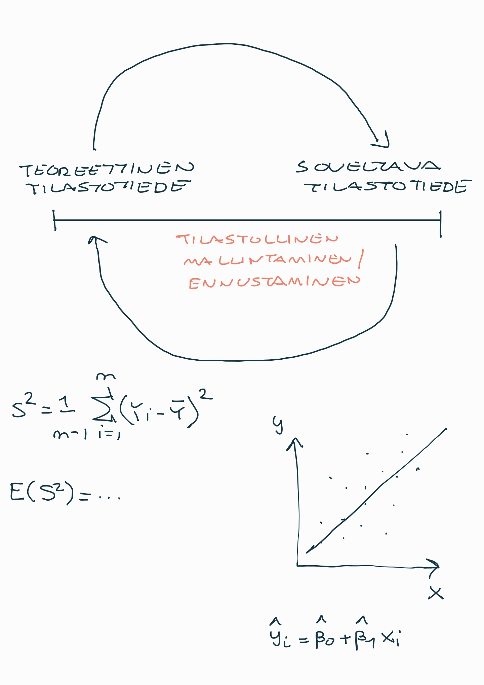
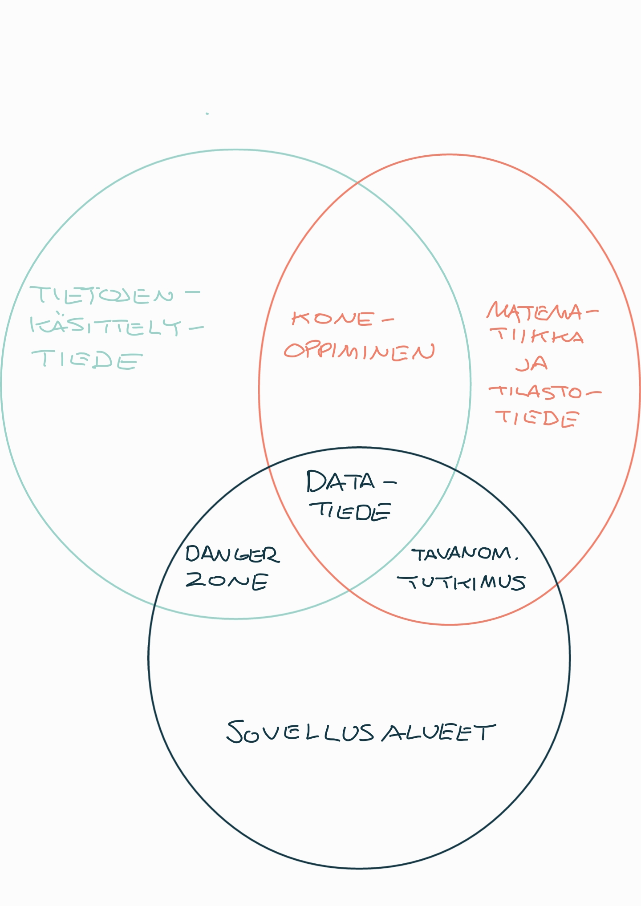

3 Tilastotiede tieteenalana
Tässä luvussa hahmottelemme tilastotieteen piirteitä tieteenalana.
- Käymme läpi tilastotieteelle ominaisia piirteitä, jotka erottavat sen niin lähitieteistä, kuten matematiikasta ja tietojenkäsittelytieteestä, sekä myös eri sovellusaloista.
- Usein näkee tilastotieteen typistettävän vain työkaluksi eri sovellusalojen empiiriseen tutkimukseen. Tämä siitäkin huolimatta että tilastotieteellä on oma rikas teoriapohjansa sekä kiistaton asema omana tieteenalanaan.
Tieteenalan määritteleminen lyhyesti on aina hieman hankalaa. Tästä huolimatta seuraavassa yritämme osaltaan vastata seuraaviin kysymyksiin:
- Mitä tilastotiede on ja mitä se ei ole? Miksi tilastotiede ei ole vain sovellettua matematiikkaa tai matematiikalla höystettyä tietojenkäsittelyä?
- Mihin tilastotiedettä käytetään? Onko tilastotieteellä käyttöä ns. “akatemian” eli tutkimusyhteisön ulkopuolella?
Tlastotiedettä kohtaan esitettyä tyypillistä kritiikkiä tarkastellaan vielä tämän materiaalin (Osan II) loppupuolella. Siis sen jälkeen kun olemme ensin tutustuneet tämän kurssin myötä tarkemmin mistä tilastotieteessä on kysymys!
3.1 Mitä tilastotiede on ja mitä se ei ole?
Aloitetaan tarkastelemalla erinäisiä tilastotieteen ‘’karakterisointeja’’ eri tahojen ja tutkijoiden toimesta:
- Tilastotiede on tietotuotannon teknologiaa, jonka avulla voidaan suorittaa kvantitatiivisten tietojen joukkotuotantoa ja havaintoihin perustuvia tieteellisiä ja käytännöllisiä päätöksiä. Tilastotiede on siis yksikköjen muodostamaan joukkoon liittyvän numeerisen tietoaineiston keräämistä, analysointia ja tulkintaa koskeva tiede (Leo Törnqvistin, Suomen ensimmäisen tilastotieteen professorin, esittämä luonnehdinta (Vartia, 1989))
- Tilastotiede on yleinen menetelmätiede, jota sovelletaan, jos reaalimaailman ilmiöstä halutaan tehdä johtopäätöksiä ilmiötä kuvaavien kvantitatiivisten tai numeeristen tietojen perusteella sellaisissa tilanteissa, joissa tietoihin liittyy epävarmuutta tai satunnaisuutta (Mellin, 2004).
- Vale, emävale, tilasto (Mark Twain, 1907).
- Twain popularisoi tämän lausahduksen teoksessaan Chapters from My Autobiography jo vuonna 1907. Huomionarvoista toki on, että valtaosa “modernin” tilastotieteen teoriakehityksestä, jolle nykytilastotiede pohjautuu, on tapahtunut vasta Twainin teoksen julkaisun jälkeen. Esimerkiksi Ronald Fisher, jota pidetään modernin tilastotieteen isänä, julkaisi merkityksellisimmät työnsä vasta 1920- ja 30-lukujen aikana. Tällä lentävällä lausahduksella ei siis ole mitään tekemistä nykyisten tilastollisten menetelmien kanssa.
- Statistics concerns what can be learned from data (Davison, 2003. Statistical Models. Cambridge University Press.)
- Maalaisjärjen tehostamista (Sund, 2003)
Tilastotieteen määrittelyä haettaessa on viimeistään tässä vaiheessa syytä esitellä tilastotieteen keskeinen (keskeisin) konsepti eli todennäköisyys. Todennäköisyys on tilastotieteen perusta, joka mahdollistaa datan analysoinnin, tulkinnan ja päätöksenteon epävarmuuden vallitessa.
Se tarjoaa matemaattisen perustan epävarmuuden ja satunnaisuuden käsittelylle.
Todennäköisyydellä on ratkaisevan tärkeä rooli tilastollisessa päättelyssä eri muodoissaan sekä mm. ennustamisessa ja ylipäätään data-analyysissä.
Todennäköisyys
Todennäköisyys on epävarmuuden muodollinen matemaattinen ilmaus. Olkoon \(P(A)\) tapahtuman \(A\) todennäköisyys. Todennäköisyyden keskeisiä sääntöjä ovat:
- Rajat: \(0 \leq P(A) \leq 1\), jossa \(P(A) = 0\), jos tapahtuma \(A\) on mahdoton, ja \(P(A) = 1\), jos A on varma tapahtuma.
- Komplementti: \(P(A) = 1 - P(\text{ei A})\).
- Yhteenlaskusääntö: Jos \(A\) ja \(B\) ovat toisensa poissulkevia tapahtumia, eli vain toinen voi tapahtua, \(P(A \text{ tai } B) = P(A) + P(B)\).
- Kertolaskusääntö: Minkä tahansa tapahtumien \(A\) ja \(B\) osalta, \(P(A \text{ ja } B) = P(A|B)P(B)\), jossa \(P(A|B)\) edustaa \(A\):n todennäköisyyttä, kun \(B\) on tapahtunut.
- \(A\) ja \(B\) ovat riippumattomia, jos ja vain jos \(P(A|B) = P(A)\), eli \(B\):n tapahtuminen ei vaikuta \(A\):n todennäköisyyteen. Tässä erikoistapauksessa siis \(P(A \text{ ja } B) = P(A)P(B)\).
Todennäköisyyden käsitteelle voidaan esittää erilaisia tulkintoja, joista kolme tärkeimmät ovat seuraavat (esim. Mellin (2004, s. 240)):
- Todennäköisyyden tulkinta suhteellisena frekvenssinä. Tapahtuman tn. voidaan samaistaa tapahtuman suhteelliseen frekvenssiin, kun tarkasteltava satunnaisilmiö esiintyy toistuvasti. Jos tapahtuman suhteellinen frekvenssi lähestyy satunnaisilmiön toistuessa jotain lukua, on tuo luku tapahtuman empiirinen todennäköisyys, mikä puolestaan liittyy tilastotieteen keskeiseen tulokseen eli ns. suurten lukujen lakiin.
Esimerkiksi harhattoman kolikon heittämisessä kruunien suhteellinen osuus kaikista heitoista lähestyy arvoa 1/2 eli 50% heittojen lukumäärän kasvaessa.
- Todennäköisyyden tulkinta subjektiivisena todennäköisyytenä ja vedonlyöntisuhteena. Ainutkertaisten tapahtumien tn. on henkilökohtainen ja se voidaan määritellä sen vedonlyöntisuhteen avulla, johon henkilö suostuu.
Esimerkki. Oletetaan, että ennen Daavidin ja Goljatin kohtaamista vedonlyöntisuhteeksi ilmoitetaan 1:9. Tämä tarkoittaa vedonlyöjien uskovan Daavidin voittoon tn:llä 1/10 = 10 % ja Goljatin voittoon 9/10 = 90 %. Vedonlyöntisuhde on näiden todennäköisyyksien suhde. Sivuuttamalla edelleen vedonvälittäjien osuuden (komission), voidaan näistä päätellä että meille tutumpien kertoimien kautta Goljatin voitosta saisi kertoimen 1.11 ja Daavidin voitosta kertoimen 10.
- Todennäkäisyystulkinta klassisena todennäköisyytenä. Tällöin satunnaisilmiö koostuu toisensa poissulkevista symmetrisistä alkeistapahtumista. Klassinen tn. saadaan määräämällä (päättelemällä) tapahtumalle suotuisten alkeistapahtumien lukumäärän suhteena kaikkiin mahdollisten alkeistapahtumien lukumäärään.
Esimerkki. Nopanheitto ja siihen kohdistuva tutkimuskysymys on esimerkki klassisesta todennäköisyydestä. Kuten esim. olkoon määrättävä todennäköisyys tapahtumalle, että kummallakin nopalla saadaan sama silmäluku. Osoittautuu, että tämän tn. on 1/6 eli 16.7 %.
Todennäköisyyden tarkempi käsittely, kuten edellä mainittujen ominaisuuksien tarkempi tarkastelu tapahtuu myöhemmillä todennäköisyyslaskennan ja tilastotieteen kursseilla.
Tilastolliset mallit ja todennäköisyyslaskenta. Tilastollisten mallien ajatusta esiteltiin jo aiemmin lyhyesti ja tähän palataan tarkemmin vielä myöhemmin. Ne perustuvat todennäköisyyslaskentaan ja niillä mallinnetaan reaalielämän ilmiöiden alla piileviä prosesseja ja mekanismeja. Näiden prosessien tuottamia tietoja (aineistoja) tiivistetään usein graafisiksi esityksiksi ja tunnusluvuiksi sekä lopulta erityisesti tilastollisten mallien parametreiksi, joiden pohjalta johtopäätöksiä tehdään. Tässä onnistuakseen tilastollisten menetelmien tuleekin pyrkiä erottelemaan sattuma ja systemaattisuus tarkasteltavissa ilmiöissä, tai tarkemmin, niitä kuvaavissa aineistoissa, jotta johtopäätökset olisivat luotettavia.
Tiivistetysti voidaan sanoa, että saadakseen tarkemmin selville mitä tilastotiede on, pitää opiskella tilastotiedettä ja sen käyttöä!
Mitä tilastotiede ei ole
- Tilastotiede ei ole vain tilastojen tuotantoa ja/tai oppia tilastoista ja niiden tekemisestä
- Vaikka sana tilasto tuo useimmille ensimmäisenä mieleen yhteiskuntaa ja sen toimintaa kuvaavat numeeristen tietojen järjestelmälliset kokoelmat, tilastotiede ei suinkaan ole ainoastaan tilastojen ja niiden tekemisen oppia.
- Tämä siitäkin huolimatta, että niiden menetelmien konstruointi, joilla tilastoja tuotetaan, jalostetaan ja analysoidaan on keskeinen osa tilastotiedettä. Tilastot ovat siis usein tilastotieteen soveltajan tutkimuskohteena ja tilastojen laadinnassa käytetään apuna tilastotieteen menetelmiä.
- Suomessa erityisesti Tilastokeskus (https://stat.fi/fi) toimii virallisena tilastoviranomaisena ja tilastotuottajana. Tätä tilastotuotannon kokonaisuutta nimitetään ajoittain tilastotoimeksi. Tilastotieteen käyttöalue on paljon tätä laajempi.
- Ajoittain käytettävää terminologiaa ja luokittelua: Tilastoala ja tilastotoimi
- tilastoala = tilastotiede + tilastotoimi
- tilastotiede = teoreettinen tilastotiede + soveltava tilastotiede
- tilastotoimi = tilastojen tuotanto + tilastojen hyödyntäminen
- Vaikka sana tilasto tuo useimmille ensimmäisenä mieleen yhteiskuntaa ja sen toimintaa kuvaavat numeeristen tietojen järjestelmälliset kokoelmat, tilastotiede ei suinkaan ole ainoastaan tilastojen ja niiden tekemisen oppia.
- Tilastotieteen kannalta mikä tahansa reaalimaailman ilmiötä kuvaava numeeristen tai kvantitatiivisten tietojen järjestelmällinen kokoelma voi muodostaa tilastollisen aineiston ja siten tilastollisen tutkimuksen mahdollisen kohteen.
- Esimerkiksi kaikki empiirisen tai kvantitatiivisen tutkimuksen tutkimus- tai havaintoaineistot ovat tilastotieteen kannalta tilastollisia aineistoja.
Tilastotiede sijoittuu tieteiden kentässä matematiikan, filosofian ja tietojenkäsittelytieteen rinnalle. Tästä huolimatta se ei kuitenkaan ole yksiselitteisesti minkään näiden osa-alue.
Tilastotiede ei ole matematiikan osa-alue, sillä tilastotiede lähestyy tieteellistä ongelmanratkaisua eri tavoin:
Matematiikka on tietyllä tavalla eksaktia ja sen tulokset perustuvat formaaliin deduktioon ja loogisiin todistuksiin, johtaen useimmiten “eksaktiin” ratkaisuun tai matemaattisesti formaaliin ratkaisun loogiseen esitystapaan.
Tilastotiede sen sijaan on aina konteksti- ja aineistopohjaista ja perustuu induktiiviseen päättelyyn. Saadut tulokset ovat aina epävarmoja, koska ne kuvailevat epävarmaa tietoa generoivia prosesseja (tarkasteltavan otoksen perusteella)!
Tilastotiede on siis hyvä nähdä omana tieteenalanaan matemaattisesta esitystavastaan huolimatta. Eihän esimerkiksi myöskään fysiikkaa (sentään) pidetä matematiikan osa-alueena!
Tilastotiede ei ole myöskään tietojenkäsittelytieteen osa-alue, vaikkakin useiden laskennallisten menetelmien ja tehokkaan tietojenkäsittelyn rooli tilastollisissa analyyseissä on jatkuvasti kasvanut. Tietojenkäsittelytiede
- Tietojenkäsittelytieteen teoria ei rakennu tilastotieteen tavoin ajatukselle epävarmoista ja satunnaisista reaalimaailman ilmiöistä.
Vaikka matematiikka ja tietojenkäsittelytiede, ja jotkin muut alat, jakavat tilastotieteen kanssa useita piirteitä ja ominaisuuksia, on tilastotiede kuitenkin siis perustellusti oma tieteenalansa. Tämä erottelun vaikeus jo itsessään todistaa kuinka keskeinen rooli tilastotieteellä on eri aloilla!
- Tilastotiede ei siis kuulu yksiselitteisesti sen lähitieteiden alle, vaan muodostaa oman tieteenalan omine teorioineen ja tieteellisine premisseineen. Datatiede/data science
- Käsittelemme myöhemmin tilastotieteen roolia matematiikan ja/tai datatieteiden (‘’data science’’) kokonaisuudessa ja keskustelemme tarkemmin näiden välisistä eroista.
Mitä tilastotiede (ainakin) on
Tilastotiede yleisenä menetelmätieteenä. Tieteellistä tietoa ympäröivästä maailmasta hankitaan tieteellisillä menetelmillä/metodeilla (ks. tieteellisen menetelmän kriteerit), joiden avulla tutkitaan jotain ilmiötä tai sen generoimaa kvantitatiivista mutta epävarmaa tietoa sisältävää aineistoa.
Tilastotieteessä kehitetyt ja kehitettävät menetelmät antavat tutkijoille yhtenevät ja tiedeyhteisön hyväksymät raamit, jotka mahdollistavat (tilastollisen) päättelyn ja päätöksenteon epävarman tiedon vallitessa. Näin voidaan uskottavasti ja luotettavasti tiivistää tietoa, jota erilaiset aineistot sisältävät, perustaa johtopäätöksiä näille tiivistyksille ja saavuttaa uusia tieteellisiä löytöjä.
Tilastotieteen menetelmien käyttö ja soveltaminen onkin siis aina alakohtaista. Tästä huolimatta tilastollisia menetelmiä sovelletaan (aina) johonkin aineistoon!
Tilastotiede nähdäänkin usein kuuluvan ns. menetelmätieteisiin, joissa mm kehitetään työkaluja muiden tieteiden tutkimusongelmien ratkaisuksi ja jolla on myös oma sovelluksista vapaa teorianmuodostuksensa
Summarisoidaan nyt mitä tilastotiede on:
Tilastotiede kehittää ja soveltaa tilastollisia menetelmiä ja malleja satunnaisilmiöitä kuvaaville kvantitatiivisia tietoja generoiville prosesseille, joiden avulla reaalimaailman ilmiöistä voidaan tehdä johtopäätöksiä ilmiöitä kuvaavien numeeristen tilastotietojen perusteella.
Näin tilastotietoihin liittyy epävarmuutta ja satunnaisuutta.
Tilastolliset mallit ja menetelmät perustuvat osaltaan todennäköisyyslaskentaan.
Tilastollisten menetelmien avulla pyritään löytämään reaalimaailman satunnaisia ilmiöitä kuvaavista numeerisista (eli kvantitatiivisista) tiedoista systemaattisia piirteitä joita jalostetaan sellaiseen muotoon, että ilmiöistä voidaan tehdä päätelmiä. Tässä voidaankin nähdä olevan kysymys signaalin ja kohinan erottamisesta (ks. Silver, 2014).
Juuri sattuman ja epävarmuuden huomioiminen tutkimusasetelmissa erottaa tilastotieteen muista menetelmätieteistä!
Tilastollisia menetelmiä voidaan soveltaa tietojen keruun, jalostuksen ja analysoinnin jokaisessa vaiheessa.
Päämääränä on jalostaa tiedot muotoon, joka mahdollistaa tutkittavaa reaalimaailman ilmiötä koskevien johtopäätösten tekemisen (tilastollisessa päättelyssä) käytettävien menetelmien pohjalta.
Tutkimuksessa on pystyttävä valitsemaan ja käyttämään menetelmiä, jotka antavat aineistosta vastauksia haluttuihin kysymyksiin. Tämä vaatii yhtä lailla sovellusalakohtaista osaamista, eli substanssiosaamista, kuin myös kattavaa menetelmäosaamista.
Aineisto (data)
Tilastotiede, jatkoa. Tilastotieteessä lähtökohtana ja ratkaisevassa asemassa on siis aina jonkin satunnaisilmiön generoima aineisto (data), josta haluamme oppia tai tietää lisää.
Tämä aineistokeskeisyys yhtäältä erottaa tilastotieteen rajatieteistään ja toisaalta tuo sen lähemmäksi niitä ja sovellusalojaan. Aineistoa analysoidaan, kuvaillaan ja mallinnetaan tilastollisin menetelmin, joiden kehittäminen on keskeinen osa tilastotiedettä.
Pelkkä menetelmien kehittäminen kuuluu pitkälti matemaattisen/teoreettisen tilastotieteen osa-alueelle (palataan vielä myöhemmin).
Toisaalta pelkkä aineistoon keskittyminen ja (mekaaninen) analysointi voi sen sijaan olla joissain tilanteissa pitkälti tietojenkäsittelyä.
Tilastollinen mallintaminen löytyykin näiden välistä ja se sisältää eri alojen sovelluksista kumpuavan tarpeen uusien menetelmien kehittämiseen. Tämä vuoropuhelu muodostaa tilastotieteelle luonnollisen “takaisinkytkennän” teoreettisen ja soveltavan puolen välillä: uudet teoreettiset menetelmät vastaavat soveltavan tilastotieteen ongelmiin mutta herättävät aina uusia kysymyksiä, jotka palautuvat taas teoreettisen tilastotieteilijän pöydälle!
Luonnollisesti valtaosa tilastotieteilijöistä ja lähitieteiden tutkijoita (erityisosaajia) asettuvat näiden äärimmäisten luonnehdintojen välimaastoon eikä tarkkaa luokittelua ole sinänsä tarpeen tehdä ja korostaa.
Joka tapauksessa tilastotieteen, ja sen osa-alueiden, kehityksen keskiössä ovat aina sovellusalakohtaiset ongelmat, joista useat palautuvat yleisemmälle tasolle teoreettisen tilastotieteen kehityspolkuihin.
3.2 Tilastotieteen suhde lähitieteisiin
Oheinen kuvio (lähde: Duchesnay (2020): https://duchesnay.github.io/pystatsml/introduction/machine_learning.html) tarjoaa karkean yleistyksen tietojenkäsittelytieteen (Computer Science), sovellusalan (Application domain) sekä tilastotieteen (Statistics) ja matematiikan (Mathematics) välisistä yhteyksistä. On selvää että tilastotieteellä on paljon päällekkäisyyksiä lähitieteidensä kanssa ja joskus näkeekin, huolimatta edellä tehdyistä huomioista, että tilastotiede niputetaan yhteen matematiikan tai tietojenkäsittelytieteen kanssa.

Yritetään siis hahmotella tilastotieteen suhdetta sitä lähimpänä olevaan (soveltavaan/sovellettuun) matematiikkaan.
- Tilastotieteessä olennaisen otantateorian voisi ajatella olevan matemaattisesti määritelty teoria, jossa myös on aineiston käsite, mutta se ei tee siitä vielä varsinaisesti tilastotiedettä.
- Matematiikassa kuvataan ongelma ja esitetään se teorian muodossa, eli malli on parametreista havaintoihin. Tilastotieteessä ongelma on käänteinen, edetään havainnoista parametreihin, mutta ongelman matemaattinen kuvaus vaaditaan ensin. Tilastotiede esittää menetelmiä ja käsitteitä tämän käänteisen ongelman ratkaisemiseen.
- Karkeasti erotellen tilastotieteessä käsiteltävät ongelmat lähtevät aina havainnoista eli aineistosta ja matematiikassa suunta on teoriasta aineistoon.
- Voidaankin siis sanoa, että tilastotieteen erottaa puhtaasta matematiikasta se, että siinä tutkitaan menetelmiä eli metodeja, jotka mahdollistavat päättelyn/tiedon hankinnan puutteellisesta tai epävarmasta tiedosta.
Matemaattiset ja tilastolliset mallit voidaan jakaa deterministisiin ja stokastisiin malleihin.
Deterministisen mallin tapauksessa, tiettyjen alkuehtojen (alkuarvojen) vallitessa, voidaan määrittää tarkasteltavan ilmiön lopputulos.
Esimerkkejä ovat esim. monet fysiikan lait.
Stokastiset mallit perustuvat todennäköisyyslaskentaan. Stokastisia malleja käytetään kun alkuehtojen perusteella ei voida varmasti määrittää tarkasteltavan ilmiön lopputulosta. Tällöin eri vaihtoehtoihin liittyvät tietyt esiintymistodennäköisyydet.
Esimerkkejä ovat mm. kolikonheitto tai sään ennustaminen.
Kun jotain ilmiötä kuvataan stokastisen mallin avulla, voidaan käyttää (joudutaan käyttämään) tilastollisia menetelmiä. Vaikka käytännössä laskenta hoidetaan tietokoneohjelmien avulla, meidän tilastotieteen tutkijoina ja käyttäjinä on huolehdittava tutkimusprosessin onnistuneesta toteutuksesta muilta osin.
Tilastotiede ei myöskään ole puhtaasti tietojenkäsittelyä, vaikka tilastotiede onkin luonteeltaan aineistopohjaista ja aineistojen sisältämää tietoa on käsitelty osin samoin kuin tietojenkäsittelyssä siitä asti kun se on ollut mahdollista (tietokoneen keksimisen myötä).
- Tilastotieteen ja tietojenkäsittelytieteen ero on lähitieteistä selvin: tilastotieteellä on “mekaanisesta” tai teoreettisesta tietojenkäsittelystä selkeästi erillinen ja oma teoriapohjansa.
- Siinä missä tilastotieteen teoria perustuu aineiston stokastiselle mallintamiselle, tietojenkäsittely on enemmänkin algoritmista ajattelua, missä aineistolla on ratkaisevalla tavalla erilainen rooli.
- Lisäksi suomen kielessä tietojenkäsittely ymmärretään laajemmassa mielessä ohjelmoitavissa olevaksi automatisoimiseksi, jota tilastotiede ei perusolemukseltaan suinkaan ole.
Tarkastellaan seuraavaksi tilastotieteen suhdetta viime vuosien aikana paljon suosiota keränneeseen datatieteeseen (data science).
Datatiede (data science). Tieteenala, joka keskittyy tekniikoihin, joilla saadaan muodostettua analyysejä ja käsityksiä analysoitavasta aineistosta (datasta). Tämä sisältää algoritmien rakentamisen ennustamista varten, datan analysoinnin, visualisoinnin ja mallintamisen.
Perinteinen tilastotiede on olennainen osa datatiedettä, mutta siihen luetaan kuuluvaksi myös vahva ohjelmoinnin ja datan hallinnan elementti. Datatiede hyödyntää monipuolisia menetelmiä ja työkaluja, kuten koneoppimista, tekoälyä, suurten datamäärien käsittelyä ja tilastollista analyysiä, jotta voidaan tehdä perusteltuja päätöksiä ja ennusteita.
Datatieteellä ei usein nähdä olevan omaa historiallisen tieteellisen prosessin luomaa teoriapohjaa vaan sen voidaan katsoa olevan kokoelma eri alojen tieteellisiä menetelmiä ja tuloksia, jotka voidaan yhdistää tavalla, jonka datavallankumous mahdollistaa ja jotka ovat keskeisessä roolissa dataintensiivisissä sovellutuksissa.
- Datavallankumouksella viitataan tässä jatkuvasti kasvaneeseen laskentakapasiteettiin ja datamassojen hallintaan mitä yhä paremmat tietokoneet, ja nyt myös tekoäly eri muodoissaan, mahdollistavat eri sovellusalueilla.
Koneoppiminen
Yksi edeltävän kuvan alueista liittyy koneoppimiseen.
Koneoppimiseen (machine learning) luetaan menetelmiä ja algoritmeja, jotka liittyvät esim. luokittelun, ennustamisen tai klusteroinnin, saavutttamiseksi mahdollisesti monimutkaista aineistoa analysoitaessa. Koneoppiminen hyödyntää ja korostaa laskennallisia menetelmiä ja algoritmeja, joiden avulla tietokoneet voivat oppia ja tehdä päätöksiä mm. ilman tarkemman tilastollisen analyysimallin rakentamista.
Koneoppimiseen luettavia menetelmiä käytetään monenlaisiin sovelluksiin, kuten kuvantunnistukseen, luonnollisen kielen käsittelyyn, suositusjärjestelmiin ja moniin muihin datan analysointitehtäviin
Datatieteeseen voidaan katsoa lukeutuvan piirteitä mm. seuraavilta aloilta:
- Tilastotiede ja matematiikka
- Erityisesti tilastollinen data-analytiikka ja satunnaismekanismien perusteella saatujen aineistojen mallintaminen sekä soveltuvat soveltavan/sovelletun matematiikan osa-alueet.
- Tietojenkäsittely
- Tietoteknologian kehityksen myötä taitavien tietojenkäsitteljöiden kysyntä on kasvanut merkittävästi. Lähes jokaisella alalla kerätään entistä enemmän dataa lähes kaikesta, ja jonkun pitäisi osata myös käsitellä näitä aineistoja!
- Datatieteen voidaankin osaltaan katsoa syntyneen tästä elinkeinoelämän tarpeesta asiantuntijoille, jotka osaavat käsitellä ja hallita suuria tietoaineistoja (dataa) sekä mallintaa niitä hyödyllisellä tavalla. Nämä piirteet korostavat tietojenkäsittelytiedettä.
- Sovellusala(t)
- Datatiede on luonteeltaan pääosin soveltavaa ja sen alaan lukeutuvia menetelmiä sovelletaan aina johonkin tosielämän ongelmaan. Tästä syystä substanssiosaaminen tarkasteltavalta sovellusalalta on datatieteilijälle erityisen tärkeää ja nykypäivänä datatieteilijän rooli onkin pirstaloitunut yhä enemmän eri sovellusalojen datatieteisiin.
- Tästä huolimatta datatieteilijöiden käyttämät mallinnusmenetelmät ovat usein varsin samanlaisia (ellei olennaisesti aivan samoja), sillä ne pohjautuvat edelleen tilastotieteen ja matematiikan teoriapohjaan. Ilman jälkimmäisten riittävää osaamista, liikutaan datatieteen osalta vaarallisilla vesillä! Ks. oheisen kuvan danger zone ja keskustelu alla.
“Danger zone”. Oheisen Duchesnayn (2020) kuvan “danger zone” kuvaa tilannetta, jossa ilmiöiden ja toisaalta myös mallien/menetelmien, tilastotieteellinen perusta unohdetaan.
Tilastotieteen näkökulman ohittava (laiminlyövä) soveltaja ei aina kykene suhtautumaan kriittisesti muodostuvaa ennustemallia, tai ennustetulosta, kohtaan eikä täten päädy parhaisiin mahdollisiin (tarkimpiin) ennustetuloksiin tilanteessa, jossa jokin toinen malli kuvaisi ilmiötä paremmin.
Ko. soveltaja ottaa mallin sekä sen antaman ennustetuloksen annettuna, eikä mieti mistä kyseinen ennustetulos johtuu. Jotta tarkat ennustetulokset toteutuvat jatkossakin (kun uutta aineistoa, dataa, tulee saataville), on ennustajan oleellista huomioida mitkä tekijät johtivat tarkkaan ennustetulokseen.
Eri menetelmät sopivat eri sovelluskohteisiin. Tilastotieteilijä osaa useimmiten tunnistaa eri sovelluskohteisiin sopivat menetelmät paremmin kuin tietojenkäsittelijä. Vastaavasti tehokkaan/onnistuneen ohjelmointikoodin kirjoittamisessa tilanne on usein toisinpäin.
- Ajoittain sovelluskohteet tai ennusteongelmat ovat riippuvuusrakenteiltaan niin monimutkaisia, että kovin vahvoja tulkintoja ei ole edes mahdollista muodostaa!
Hyvä toki korostaa vielä, että tilastotieteilijä voi myös erehtyä analyyseissään!
3.3 Tilastotieteen osa-alueet
Tilastotiede on saanut alkunsa siitä, että yhteiskunnan modernisoituessa on tarvittu yhä enemmän tietoja erilaisiin hallinnollisiin tarpeisiin. Samalla on syntynyt tarve kehittää menetelmiä joiden avulla tilastojen luotettavuutta on voitu parantaa.
- Kehitys oli pitkään ns. ongelmasta menetelmään ja tutkimusalojen erilaisuudesta johtuen myös tilastotiede on kehittynyt vastaamaan monipuolisesti erilaisiin menetelmällisiin ongelmiin.
- Tämä on johtanut osaltaan siihen, että tilastotiede jakautuu moniin osa-alueisiin. Osa-alueita on niin paljon, että alan huiputkaan eivät voi hallita niitä kaikkia!
Tilastotiede voidaan karkeasti jakaa teoreettiseen ja soveltavaan osa-alueeseen, jotka toimivat alituisessa vuoropuhelussa. Soveltava tilastotiede
Soveltava tilastotiede on nimensä mukaisesti teoreettisen tilastotieteen kehittämien menetelmien soveltamista jonkin tutkimusalan empiiriseen ongelmaan. Suurin osa tilastotieteen menetelmistä on alun perin kehitetty jonkin konkreettisen tutkimusongelman innoittamana.
Yleisesti ottaen eri tieteenaloilla kohdattavat menetelmäsuuntaukset voidaan jakaa kahteen luokkaan tutkimusaineistojen tyypin perusteella:
Kvantitatiivinen tutkimus
Kvantitatiivinen eli määrällinen tutkimus on tutkimusta, jossa tutkimusongelma on muotoiltu tarkasti etukäteen ja tutkimuskysymyksiin vastataan käyttäen tilastollisia menetelmiä pyrkien mallintamaan, selittämään ja/tai ennustamaan tutkimuksen kohteena olevaa ilmiötä.
Täsmällisten ja laskennallisten tilastollisten menetelmien käyttäminen numeeriseen aineistoon on kvantitatiiviselle tutkimukselle ominaista.
Perustuu yleensä satunnaisotokseen ja tutkimusaineisto on tiivistetty numeeriseksi havaintomatriisiksi, jolle oleellinen vaatimus on sen totuudellisuus.
Kritiikki: määrällinen tutkimus on (paikoin) sokea tutkittavien ilmiöiden sellaiselle luonteelle, jota ei pystytä kvantifioimaan, eli muuntamaan numeeriseen muotoon. Näihin voidaan katsoa lukeutuvan mm. tunteet, merkitykset ja kokemukset, ellei tutkija keksi niiden numeeriselle mittaamiselle uskottavaa keinoa.
Kvalitatiivinen tutkimus
Kvalitatiivinen eli laadullinen tutkimus on tutkimusta, jossa tutkimuksen kohteena olevaa ilmiötä ja sen merkitystä sekä tarkoitusta pyritään ymmärtämään kokonaisvaltaisella tavalla.
Laadullisessa tutkimuksessa annetaan usein tilaa tutkimuksen kohteena olevien ilmiöiden ja/tai ihmisten näkökulmille, vaikuttimille, kokemuksille ja tuntemuksille. Tutkimusyksikköjen otanta on täten usein harkinnanvaraista.
Laadullisessa tutkimuksessa tutkimusongelma muotoutuu (voi muotoutua) tutkimuksen edetessä ja sille tyypillistä on hypoteesittomuus, eli tutkimus on tarkoitus aloittaa mahdollisimman vähin ennakko-oletuksin. Ennakko-oletuksista on kuitenkin mahdotonta täysin irtautua, joten niiden ilmi tuominen esioletuksina tai “tutkimushypoteeseina” eli arvauksina tuloksista on osa tutkimusta.
Kritiikkiä: laadullinen tutkimus ei pysty vastaamaan kysymykseen miksi, sillä ilman määrällisiä (numeerisia) aineistoja ei ilmiöiden välisiä riippuvuuksia kyetä tutkimaan:
Laadullisessa tutkimuksessa menetetäänkin mahdollisuus tutkia ilmiöiden todellisia syitä.
Laadullinen tutkimus nähdään usein vähemmän objektiivisena ja sen otosta koskevia tuloksia ei useinkaan voida yleistää koskemaan perusjoukkoa.
Yleisenä menetelmätieteenä tilastotiedettä voidaan (ja myös pitäisi) soveltaa kaikilla reaalimaailmaa tutkivilla tieteenaloilla, joiden tutkimusaineistot voidaan esittää kvantitatiivisessa muodossa.
- Tilastollisten menetelmien käyttö on siis huomattavan paljon yleisempää määrällisessä kuin laadullisessa tutkimuksessa.
Menetelmien soveltamisen tarkoituksena on (voi olla):
- kuvailla ja tiivistää tietoa, jota havaittu aineisto sisältää
- sovellusalan oman teorian empiirinen testaus tai
- edellisten pohjalta tehtävä tilastollinen päättely.
Deskriptiivisellä eli kuvailevalla tilastotieteellä tarkoitetaan sellaisten menetelmien soveltamista, joiden avulla havaintoaineistosta voidaan esimerkiksi laskea tunnuslukuja, kuvata havaintomuuttujien jakaumia ja visualisoida aineiston generoimaa ilmiötä tai siitä johdettuja tunnuslukuja.
Tilastollinen päättely on sen sijaan aineiston tarkasteluun/kuvailuun sekä mallintamiseen perustuvaa päätöksentekoa, jossa kvantitatiiviseen aineistoon kuuluva epävarmuus ja satunnaisuus on otettu huomioon.
- Keskeinen tilastollisen päättelyn käyttötarkoitus soveltajille on usein teorian ja siihen liitettävien hypoteesien testaaminen, joka voi johtaa joko teorian vahvistumiseen (verifiointiin) tai sen vääräksi osoittamiseen (falsifioimiseen).
- On myös syytä muistaa, että yksi tutkimus ei vielä osoita teoriaa oikeaksi tai vääräksi vaan siihen tarvitaan useita tutkimuksia sekä erilaisia tutkimusasetelmia ja -menetelmiä.
- Kuvaileva tilastotiede ja tilastollinen päättely kulkevat soveltavassa tilastollisessa tutkimuksessa käsi kädessä.
Teoreettinen tilastotiede
Teoreettinen tilastotiede kehittää (tilasto)matemaattisia malleja kuvaamaan satunnaisilmiöitä- ja prosesseja, jotka generoivat reaalimaailman ilmiöitä kuvaavia numeerisia tai kvantitatiivisia tietoja, joihin liittyy epävarmuutta ja satunnaisuutta.
Teoreettinen tilastotiede luo pohjan tilastollisten menetelmien ymmärtämiselle, soveltamiselle ja kehittämiselle. Ilman riittävää ymmärrystä tilastollisten menetelmien toimintaperiaatteista niiden soveltaja on vaarassa tehdä virhepäätelmiä!
Tilastolliset mallit perustuvat siis todennäköisyyslaskentaan, ja niitä kutsutaan tilastollisiksi malleiksi, tai ajoittain stokastisiksi malleiksi tai todennäköisyysmalleiksi.
Kaikki mallit ovat vääriä, mutta jotkut ovat käyttökelpoisia. (Box, 1976).
Todennäköisyyslaskenta luo tilastotieteelliselle epävarmuuden mallintamiselle vahvan ja uskottavan matemaattisen perustan. Vastaavasti tilastolliset mallit perustuvat laajalti niin kutsuttuun uskottavuusfunktioon, mikä vastaavasti liittyy tn-laskentaan. Se on malli, joka riippuu havaintoaineiston lisäksi yhdestä tai useammasta parametrista.
Uskottavuusfunktion arvo kertoo kuinka todennäköisenä havaittua aineistoa voidaan pitää, mikäli sen oletetaan olevan peräisin vastaavasta mallista jollain parametriarvoilla. Ts. uskottavuuspäättelyn perusajatuksena on, että se tai ne parametriarvot (tehdyillä til. mallia koskevilla oletuksilla), joilla uskottavuusfunktion arvo maksimoituu kuvaa aineiston generoinutta prosessia parhaiten.
Aineistoa koskevia hypoteeseja voidaan testata käyttäen uskottavuusfunktiota maksimia vastaavaa tilastollista mallia!
Uskottavuusfunktiot perustuvat aina satunnaisilmiöiden mahdollisia arvoja kuvaaviin nk. tiheysfunktioihin ja diskreettien sm:jien tapauksessa (tähän palataan myöhemmin) pistetodennäköisyysfunktioihin.
- Nämä funktiot kuvaavat jonkin satunnaismuuttujan (satunnaisilmiön) saamien arvojen jakaumaa.
- Esimerkiksi kolikonheitto on satunnaisilmiö ja sillä on vain kaksi arvoa (kolikon kantilleen jäämistä ei tässä lasketa mahdolliseksi tapahtumaksi) ja kolikonheittoa voidaan kuvata nk. binomijakaumalla, jota merkitään ((n,p)), jossa (n) on heittojen lukumäärä ja (p) on kruunan todennäköisyys
Esimerkki. Eräs klassinen yksinkertainen todennäköisyyslaskennassa ja tilastotieteessä käytettävä esimerkki käsittelee kolikonheittoa.
Kuvitellaan että olemme heittäneet kolikkoa 40 kertaa ja saatu kruuna 40/40 tapauksessa.
Kolikonheittoa seuranneet havainnot muodostavat nyt havaintoaineiston, jonka pohjalta voidaan perustellusti kysyä, että onko uskottavaa että kolikonheitto noudataa binomijakaumaa ((40, 0.5))? (Binomijakauma esitellään tarkemmin tulevissa luvuissa)
Toisin sanoen, kuinka uskottavana voidaan pitää sitä että kyseinen kolikko on tavallinen, painottamaton kolikko?
3.4 Tilastotieteen sovellusaloja ja “rajatieteitä”
Yleisenä menetelmätieteenä tilastotiedettä sovelletaan useilla eri tieteenaloilla. Jokaisella sovellusalalla on kuitenkin oma erillinen teoriapohjansa sekä empiiriset käytänteet, joten substanssitietous on sovellettaessa erityisen tärkeää.
- Huolimatta vaihtelevista empiirisistä käytännöistä sovellusmenetelmän taustalla on (lähes aina) kuitenkin tilastotieteen alalla kehitetty menetelmä.
- Sovellusaloilla ongelmanratkaisussa yhdistetäänkin metodiseen osaamiseen välttämättä myös substanssitietoutta. Tämän myötä soveltavan tilastollisen tutkimuksen kenttä on laaja ja rikas.
Osa näistä sovelluskentistä on kehittynyt vahvassa yhteisvaikutuksessa tilastotieteen ja lähitieteiden, kuten kasvavissa määrin erityisesti koneoppimisen, yhteydessä. Usein on pystyttävä arvioimaan ongelmanasettelun ja tulosten tarkoituksenmukaisuutta ja pyrkiä välttymään siltä että tutkijan tieteelliset ja yhteisölliset sitoumukset heijastuisivat tutkimuksen kulkuun.
- Tilastotieteen pääaineopiskelun kannalta substanssitietous saavutetaan sivuaineopintojen perusteella. Vastaavasti toisinpäin muiden aineiden pääaineopiskelijoiden kohdalla tilastotiede voi yhtä hyvin toimia (laajalti opiskeltuna) vahvana sivuaineena.
Jokaisella tieteenalalla, jonka tutkimusaineistot voidaan esittää numeerisessa tai kvantitatiivisessa muodossa voi soveltaa/voisi soveltaa/pitäisi soveltaa tilastollisia menetelmiä sekä tutkimusaineistoja kerättäessä että niitä analysoitaessa.
- Siten jokainen empiirisen tutkimuksen havaintoaineisto on tilastollisen tutkimuksen mahdollinen kohde. Esim. kokeellinen tutkimus käyttää apunaan tilastollisia menetelmiä.
Koska tilastotieteellä on sovelluksensa miltei kaikilta tieteenhaaroilla, on siis syntynyt joukko nk. rajatieteitä:
- Sovellusaloja, joilla tilastotieteen soveltaminen on muodostunut omaksi tutkimuskohteekseen/tieteenlajikseen (ks. linkit):
- Soveltavan (sovelletun) matematiikan tutkimusaloja, jotka ovat osaltaan päällekkäisiä tilastotieteen kanssa
- Tietojenkäsittelytieteen alaan (osittain) lukeutuvia tutkimusaloja
Ja paljon muita!